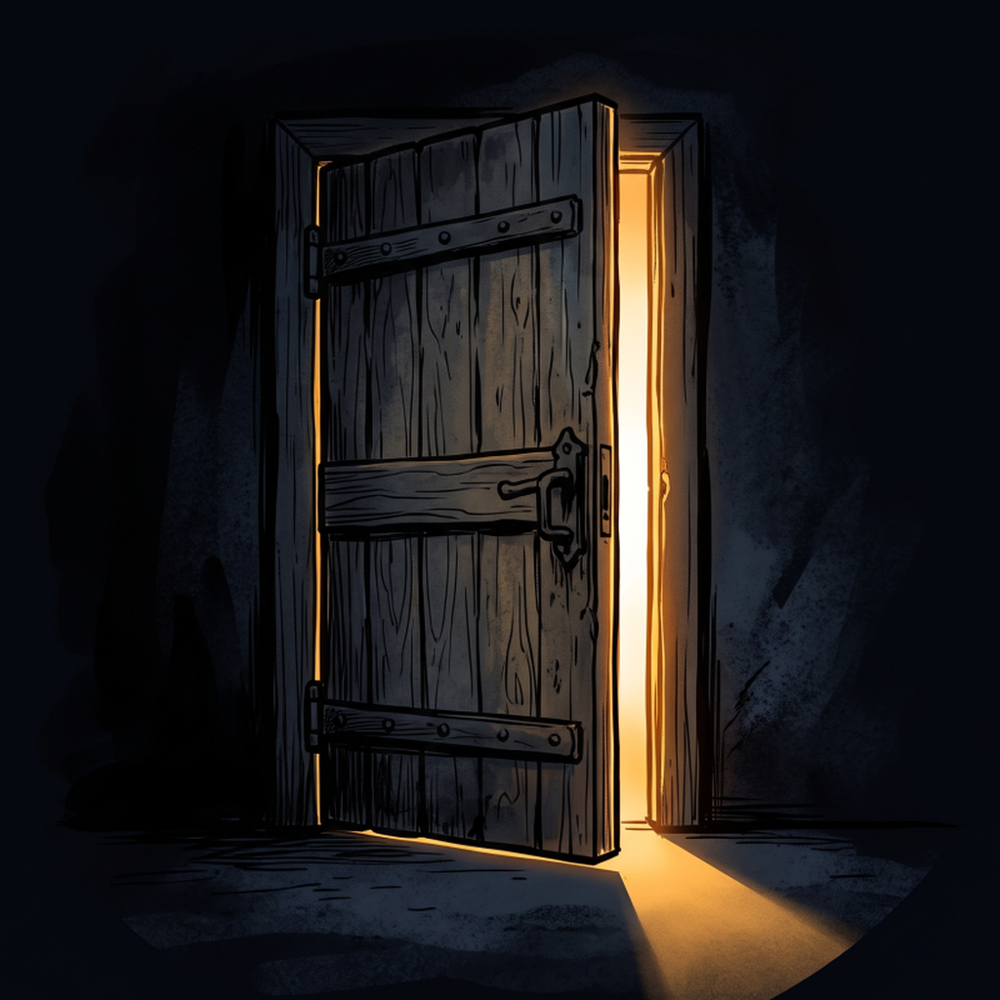
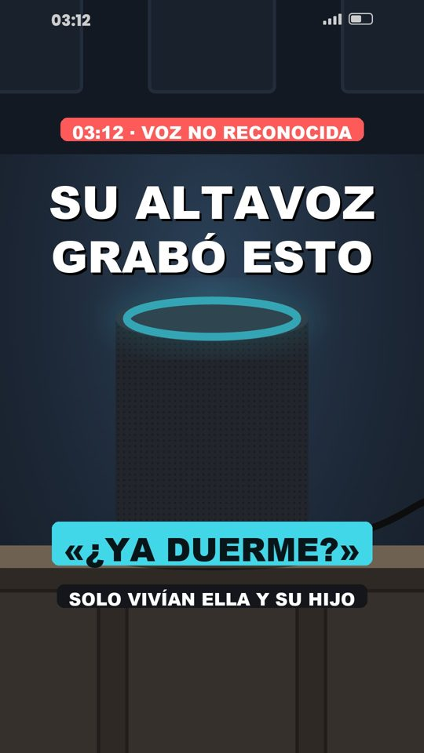

ViralClip
ViralClipCrea vídeos verticales cortos y publícalos en tus propias cuentas
ViralClip es una herramienta de creación y publicación de vídeo para creadores. Convierte un guion, una partida grabada o una noticia en un vídeo 9:16 terminado, con subtítulos, música y portada, y lo publica en las propias cuentas de TikTok, Instagram y YouTube del creador.
Cómo funcionaIntegración con TikTok
Funciones
Todo lo que necesita un pequeño equipo de creadores para pasar de una idea a un vídeo publicado, en un solo sitio.
Historias
Los guiones se convierten en historias narradas con imágenes, dos voces, subtítulos palabra a palabra y música según la emoción.
Clips de juegos
Graba partidas reales de juegos de navegador en vertical y las monta en clips de retos y mejores momentos.
Noticias
Noticias comprobadas contadas como una historia corta, con imágenes oficiales, banderas, contadores y citas.
Control de calidad
Cada vídeo se revisa antes de publicarse: volumen, zona segura de cada app, gancho del primer fotograma, portada y descripción.
Programación
El mismo vídeo sale a la misma hora en todas las redes, con título, descripción y hashtags propios de cada una.
Estadísticas
Las vistas, la retención y los guardados se leen de las propias cuentas del creador para saber qué formatos funcionan mejor.
Cómo funciona
ViralClip funciona en el ordenador del creador. El creador revisa cada vídeo antes de que salga.
Crear
Escribe o elige un guion, graba una partida o escoge una noticia. ViralClip monta el vídeo: planos, subtítulos, voz, música y portada.
Revisar
El creador ve el resultado, ajusta el título y la descripción, y lo aprueba. No se publica nada sin aprobación.
Conectar la cuenta
El creador inicia sesión con TikTok (Login Kit) y autoriza a ViralClip en su propia cuenta. Instagram y YouTube también usan su inicio de sesión oficial.
Publicar
El vídeo se sube a la cuenta del creador: como borrador en la bandeja de TikTok para terminarlo en la app, o publicado directamente con el texto y la privacidad que el creador eligió.
Medir
A las 48 horas y a los 7 días, ViralClip lee las estadísticas del vídeo en la cuenta del creador y enseña qué funcionó.
Ejemplos
Portadas de vídeos hechos con ViralClip para nuestros propios canales.



Integración con TikTok
ViralClip usa TikTok for Developers solo para publicar los vídeos del creador en la propia cuenta del creador.
| Producto / permiso | Para qué lo usa ViralClip |
|---|---|
| Login Kit · user.info.basic | Muestra qué cuenta de TikTok está conectada (nombre y foto) para que el creador sepa adónde irá el vídeo. |
| Content Posting API · video.upload | Envía el vídeo terminado a la bandeja de TikTok del creador como borrador, para editarlo y publicarlo desde la app. |
| Content Posting API · video.publish | Publica el vídeo directamente en el perfil del creador con el texto y la privacidad elegidos en ViralClip. |
El acceso se puede retirar cuando quieras desde la app de TikTok: Ajustes y privacidad › Seguridad › Gestionar permisos de apps. Lee la Política de privacidad y las Condiciones de uso.
FAQ
¿Quién usa ViralClip?
ViralClip lo usan su autor y su equipo para llevar sus propios canales: Las Otras Noches (historias), NoviralClip (noticias) y FizzPlays (juegos de navegador).
¿ViralClip publica algo sin mi aprobación?
No. Cada vídeo se revisa y se aprueba antes de subirlo o programarlo.
¿Qué datos guarda ViralClip?
Solo lo necesario para publicar y medir: el token de acceso de la cuenta conectada y las estadísticas de los vídeos que publicó. Consulta la política de privacidad.
¿ViralClip usa los servicios de API de YouTube?
Sí, para subir vídeos a los propios canales de YouTube del autor. Consulta las condiciones de YouTube y la política de privacidad de Google, enlazadas en nuestra política de privacidad.
Contacto
Preguntas sobre ViralClip, los datos que usa o peticiones de retirada: lluismayans83@gmail.com.